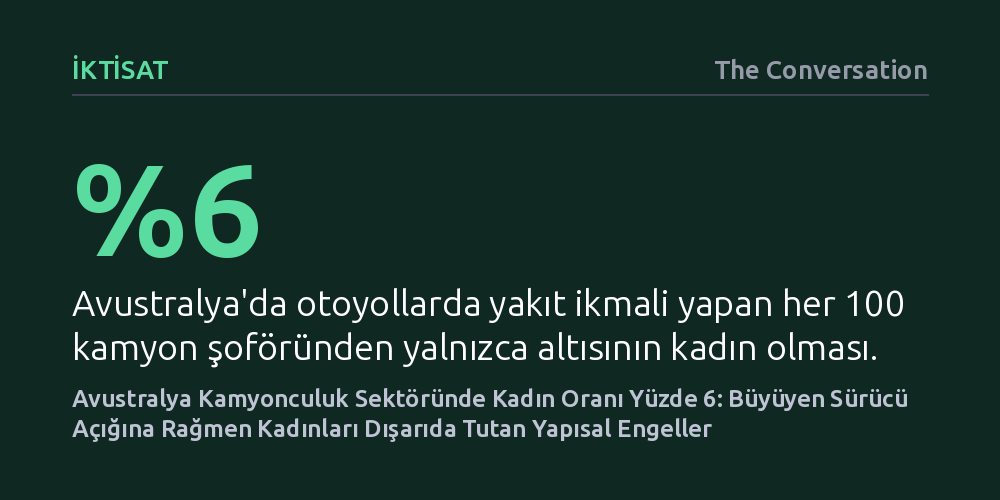

IKTISAT · The Conversation · 2026-10-13
Avustralya'da kamyon şoförlerinin yalnızca yüzde 6'sını oluşturan kadınlar, sektördeki ağır sürücü açığına rağmen yetersiz dinlenme tesisleri, taciz ve katı çalışma saatleri nedeniyle meslekten uzak kalıyor. Araştırma, sorunun kadınların tercihlerinden değil, sektörü terk etmelerine yol açan yapısal engellerden kaynaklandığını gösteriyor.
Erkek egemen sektörlerdeki kadın azlığının kişisel bir tercihten değil, çalışma ortamı ve altyapının kadınları dışlayan yapısal tasarımından kaynaklandığını somut verilerle ortaya koyar.

Avustralya'nın ana otoyollarında mola veren her yüz kamyon şoföründen sadece yaklaşık altısı kadın. 'Road train' ve 'B-double' gibi devasa çoklu kombinasyonlu ağır vasıtalarda ise bu oran yüzde dörde kadar geriliyor. Kadınların genel iş gücüne katılımının neredeyse yarı yarıya (yüzde 48,5) olduğu bir ülkede, taşımacılık sektöründeki bu tablo çarpıcı bir tezat oluşturuyor.
Bu uçurum, sektörün ciddi bir emek darboğazından geçtiği bir dönemde yaşanıyor. Ulusal Karayolu Taşımacılığı Derneği verilerine göre sektörde halihazırda 28 bin sürücü açığı bulunuyor ve bu açığın 2029 yılına kadar 78 bine fırlayacağı öngörülüyor. Sektör temsilcileri kadın istihdamını artırmak istediklerini dile getirse de Canberra'daki Parlamento Binası'nda sunulan yeni ulusal rapor, kadınların kendi istekleriyle değil, sektörün onları barındıracak koşulları oluşturmaması nedeniyle direksiyondan uzak kaldığını belgeliyor.
Araştırma kapsamında 489 kamyon şoförüyle yapılan ulusal anket ve 20 sektör temsilcisiyle gerçekleştirilen derinlemesine mülakatlar, kadınların bu mesleğe çok farklı kanallardan girdiğini gösteriyor. Kimi aile bağları ya da çiftlik geçmişi sayesinde direksiyona geçerken, kimi dizel teknisyenliği, trafik denetimi veya filo lojistiği gibi alanlardan yatay geçiş yapıyor. Üniversite borcuna girmeden iyi gelir elde etme isteği de önemli bir motivasyon kaynağı oluşturuyor.
Araştırmanın en dikkat çekici bulgularından biri ise kamyonculuğun bazı kadınlar için aile içi şiddetten bir kaçış kapısı işlevi görmesi. Düzenli bir gelir, barınabilecekleri bir tır kabini ve istismar failinden kilometrelerce uzaklaşma imkanı, kadınlara hayati bir çıkış yolu sunuyor. Hatta görüşülen bazı kadın sürücüler, bugün şiddet mağduru diğer kadınları sektöre kazandırmak ve onlara mentorluk yapmak için gönüllü çalışıyor.
Sektördeki fırsat söylemi ile sahadaki gerçeklik arasında derin bir çelişki bulunuyor. Ankete katılan erkek sürücülerin yüzde 86'sı kadınların sektöre girmesi için fırsat olduğunu belirtirken, kadın sürücülerin hoş karşılandığını düşünenlerin oranı yüzde 72'de, daha fazla kadının sektöre fayda sağlayacağını belirtenlerin oranı ise yüzde 66'da kalıyor. Üstelik erkek katılımcıların yüzde 70'i bir kadın sürücünün iş yerinde cinsel tacize uğrama ihtimalinin yüksek olduğuna inanıyor; buna karşın tacize tanık olan ya da bizzat yaşayanların sadece yüzde 20'si durumu resmi olarak bildiriyor.
Fiziksel altyapı ve çalışma saatleri de kadınları dışlayacak şekilde biçimlenmiş durumda. Otoyol dinlenme tesisleri tamamen erkek iş gücüne göre inşa edilmiş. Kadın sürücüler, kadınlara özel tuvalet ve duşların bulunmadığını ya da yalnızca erkek tuvalet bloklarının içine yerleştirildiğini, yetersiz aydınlatma yüzünden gece güvenliğinin olmadığını belirtiyor. Ayrıca işin kendisi evde hiçbir bakım yükümlülüğü bulunmayan çalışanlar varsayılarak kurgulandığı için uzun ve belirsiz saatler kadınları iş ve aile arasında tercih yapmaya zorluyor; hamilelik ise planlanan bir süreç değil, meslek hayatını sonlandıran bir kriz muamelesi görüyor.
Kadın sürücüler karşılaştıkları bu zorluklara dayanıklılıkla ve kendi gayrıresmi dayanışma ağlarını kurarak göğüs germeye çalışıyor. Ancak bireysel direnç, sistemin ürettiği sorunları çözmeye yetmiyor. Raporda da altı çizildiği üzere, "Sektöre kadın kazandırmak değerli bir hedef; ancak çalışanları elde tutamadığınız sürece bu sadece dönen bir kapıdan ibaret kalır."
Bu kısır döngüyü kırmak için üç kademeli yapısal reform öneriliyor: Ulusal düzeyde hükümetin bağlayıcı kadın istihdam hedefleri koyması ve parçalı taşeron zincirlerindeki taciz denetimini sıkılaştırması; eyalet düzeyinde dinlenme tesislerine cinsiyet ayrımı gözetmeyen asgari standartlar getirilmesi; sektör düzeyinde ise şahit müdahale eğitimleri ve kadın sürücülere yönelik resmi mentorluk ağlarının kurulması gerekiyor. Koşullar söylemlerle uyumlu hale gelmedikçe Avustralya, acilen ihtiyaç duyduğu sürücüleri çekip ardından kaybetmeye devam edecek.